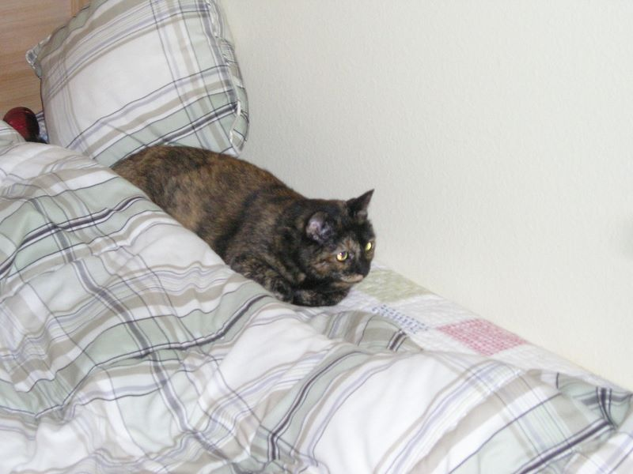

Caltech Memories -- Betta was having a baby and wanted the cat out of the way. Betta chased out the cat with cat-nip, cat-food and potty-tray all the way to my apartment. I had 'Princess' for about 3 months. She was a very shy and depressing cat. She's happily living with some other care-taker. Betta's baby is now 2 years old. Last time I checked, she was already chasing cats around the Jorgensen Parking Lot. (October 2004)
First |
Previous Picture |
Next Picture |
Last | Thumbnails
